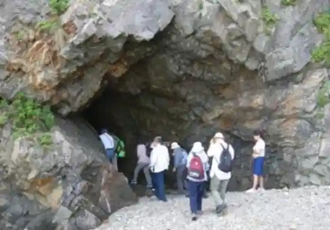
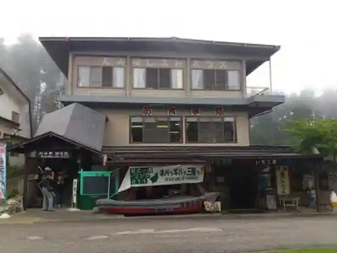

Tsukue Hama Beach
Tanohata, Iwate · 0194-34-2111 · Official / source link
Mei Ko Campground
Tanohata, Iwate · 0194-33-2816 · Official / source link

Neichatorekkingugaido
Tanohata, Iwate · 0194-37-1211 · Official / source link

Kitagawa Shokudo Go Chiso Domburi
Tanohata, Iwate · 0194-34-2251 · Official / source link
Kitayama Saki Resutohausu
Tanohata, Iwate · 0194-33-2021 · Official / source link

Tanohata Nature Daigakko
Tanohata, Iwate · 0194-33-2811 · Official / source link
Roreoru Tanohata
Tanohata, Iwate · 080-9014-9000 · Official / source link
Banya Ryori Experience
Tanohata, Iwate · 0194-37-1211 · Official / source link
Ta no Hata Nyuseihin
Tanohata, Iwate · 0194-34-2555 · Official / source link
Maki Sawahashi Shian Saka Bridge
Tanohata, Iwate · 0194-34-2111 · Official / source link
Kitayama Saki Bijita Center
Tanohata, Iwate · 0194-33-3248 · Official / source link
Tsukue Hama Banya Gun
Tanohata, Iwate · 0194-37-1211 · Official / source link
Roadside Station (Ta no Hata) Shii no Kaze
Tanohata, Iwate · 0194-32-3555 · Official / source link
Shii Bridge
Tanohata, Iwate · 0194-34-2111 · Official / source link
Kitayama Saki Dangai Kuruzu Kankosen
Tanohata, Iwate · 0194-33-2113 · Official / source link
Kitayama Saki
Tanohata, Iwate · 0194-33-3248 · Official / source link
Kan Kubo Shika Yo
Tanohata, Iwate · 0194-34-2226 · Official / source link
Haipe Koikorobe Hakua Ki Kaseki Sanchi
Tanohata, Iwate · 0194-33-3248 · Official / source link
Tanohata Folk Museum
Tanohata, Iwate · 0194-33-2210 · Official / source link
Kitayama Saki Sappa Fune Adobenchazu
Tanohata, Iwate · 0194-37-1211 · Official / source link
U no Su Dangai
Tanohata, Iwate · Official / source link
Omiya Kagura
Tanohata, Iwate · 0194-34-2226 · Official / source link